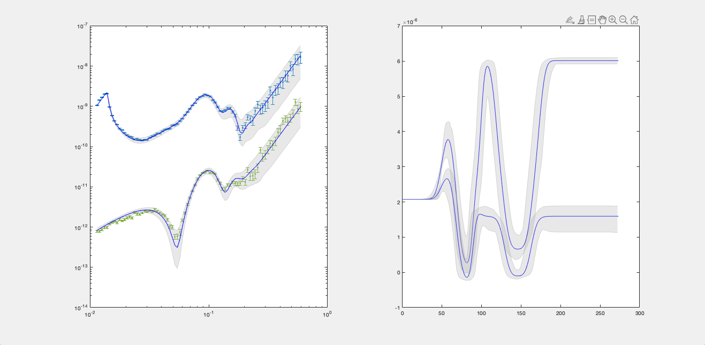

A number of function exist for plotting the results of Bayesian analysis.
Reflectivity and SLD¶
A simple reflectivity shaded plot can be displayed as follows:
figure(1); clf
bayesShadedPlot(problem,results)
{kind=link}
By default, this shows a standard reflectivity plot with a 65% shaded confidence interval.
There are a number of options to customise the plot:
Interval - You can sepcify either the 65% or 95% confidence interval to display:
bayesShadedPlot(problem,results,'interval',95)
{kind=link}
Type - You can also specify a q4 plot for the reflectivity:
{kind=link}
Posterior Histograms¶
You can easily view the marginalised Bayesian posteriors from your analysis:
plotHists(results)
{kind=link}
By default, plotHists carries out a KDE smooth of the histograms. You can optionally choose no smoothing:
plotHists(results,'smooth',false)

Corner Plots¶
To produce a cornerplot, simply use the cornerPlot function:
cornerPlot(results)
{kind=link}
Chain View¶
Finally, you can check the integrity of your markov chain as follows:
mcmcplot(results.chain,[],results.fitNames,'chainpanel');